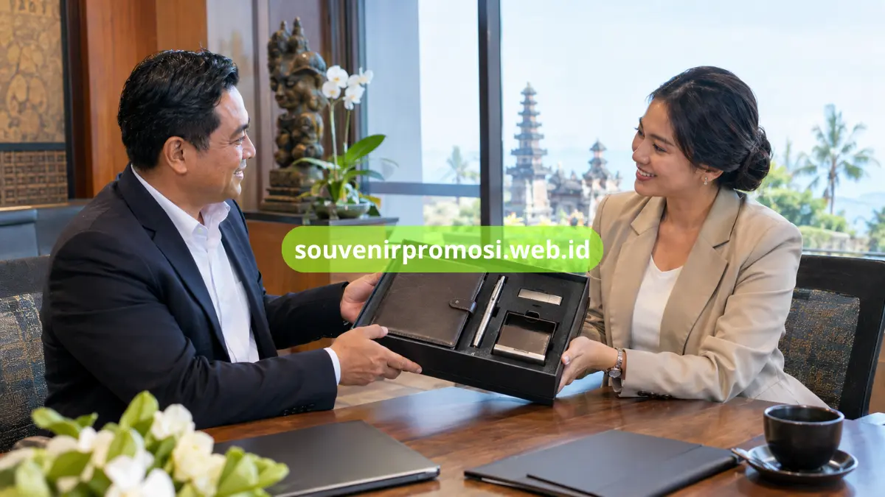

Souvenir ATK meja kerja Denpasar cocok untuk perusahaan yang membutuhkan corporate gift fungsional dengan identitas profesional, seperti pulpen metal grafir, agenda kulit emboss, desk organizer, dan flashdisk custom.
Souvenir Promosi menyediakan komposisi set ATK yang dapat disesuaikan dengan kebutuhan branding, penerima, dan aktivitas bisnis perusahaan Anda di Denpasar.
Poin Penting
- Set ATK dapat menjadi corporate gift fungsional untuk berbagai kebutuhan bisnis.
- Kawasan pariwisata dan hospitality membutuhkan merchandise yang profesional dan praktis.
- Sanur dan Renon memiliki konteks aktivitas bisnis yang dapat membutuhkan paket meeting atau apresiasi.
- Custom logo dapat diterapkan dengan grafir, emboss, atau printing sesuai material.
- souvenirpromosi.web.id melayani pemesanan dan pengiriman ke Denpasar.
Daftar Isi
Kebutuhan Souvenir Korporat Perusahaan di Denpasar
Perusahaan di Denpasar dapat menggunakan souvenir ATK sebagai bagian dari apresiasi klien, perlengkapan acara, onboarding, maupun merchandise bisnis.
Kebutuhan corporate gift di lingkungan pariwisata dan hospitality dapat mengutamakan tampilan profesional sekaligus fungsi praktis.
Pulpen metal grafir dan agenda kulit emboss dapat membentuk paket ringkas, sedangkan desk organizer atau flashdisk custom dapat ditambahkan untuk paket lebih lengkap.
Komposisi dapat disesuaikan berdasarkan penerima dan tujuan acara tanpa membuat seluruh paket harus sama.
Rekomendasi Varian Souvenir ATK Meja Kerja Paling Cocok
Varian ATK yang cocok untuk perusahaan dapat terdiri dari pulpen metal grafir, agenda kulit emboss, desk organizer, dan flashdisk custom dengan komposisi sesuai kebutuhan.
Pulpen metal dan agenda dapat digunakan untuk meeting, seminar, dan kegiatan profesional karena keduanya mendukung aktivitas mencatat.
Desk organizer memberikan fungsi penataan meja, sedangkan flashdisk custom dapat melengkapi paket dengan kebutuhan penyimpanan digital.
Kombinasi produk dapat dibuat ringkas untuk distribusi besar atau lebih lengkap untuk penerima khusus.

Bagaimana Produk Digunakan untuk Klien dan Karyawan?
Set ATK dapat digunakan sebagai hadiah apresiasi klien maupun perlengkapan kerja karyawan karena setiap komponen memiliki fungsi praktis.
Perusahaan yang berhubungan dengan hospitality dapat menggunakan agenda dan pulpen sebagai bagian dari paket apresiasi kepada mitra.
Untuk aktivitas bisnis Sanur-Renon, set ATK dapat digunakan dalam meeting, pelatihan, onboarding, dan acara perusahaan.
Paket yang terstruktur memudahkan distribusi kepada peserta dan menjaga identitas visual perusahaan.
Bagaimana Alur Pemesanan Souvenir ATK Custom Logo?
Pemesanan dapat dimulai dengan menentukan produk, jumlah, logo, teknik branding, kemasan, dan jadwal kebutuhan sebelum masuk ke tahap produksi.
Perusahaan dapat mengirim identitas logo dan menjelaskan kebutuhan penggunaannya. Setelah komposisi produk ditentukan, desain penempatan logo dapat disiapkan untuk ditinjau.
Mockup membantu memastikan ukuran logo proporsional terhadap bidang produk dan sesuai dengan identitas visual perusahaan.
Referensi komposisi lebih luas tersedia pada artikel set ATK premium meja kerja korporat dan halaman set ATK premium untuk souvenir promosi perusahaan.
- Komposisi souvenir ATK dapat disesuaikan dengan penerima, acara, dan anggaran perusahaan di Denpasar.
- Custom logo dengan grafir, emboss, atau printing menyesuaikan material produk yang dipilih.
- Souvenir Promosi siap membantu proses konsultasi hingga pengiriman ke Denpasar.
Cara Memesan Souvenir ATK Meja Kerja Custom Logo
Jangan tunda kebutuhan corporate gift perusahaan Anda di Denpasar. Kunjungi katalog lengkap dan ajukan penawaran sekarang di souvenirpromosi.web.id, atau hubungi tim Souvenir Promosi untuk konsultasi komposisi, material, dan estimasi kebutuhan sesuai skala perusahaan Anda.